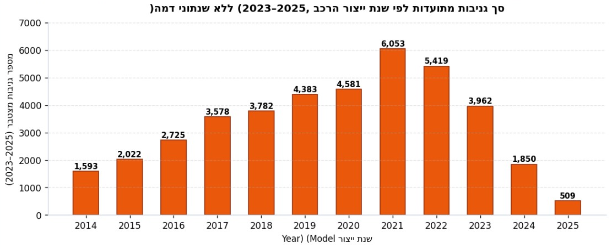
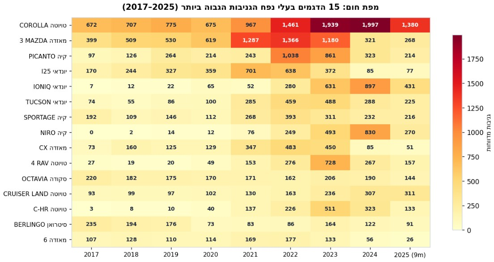
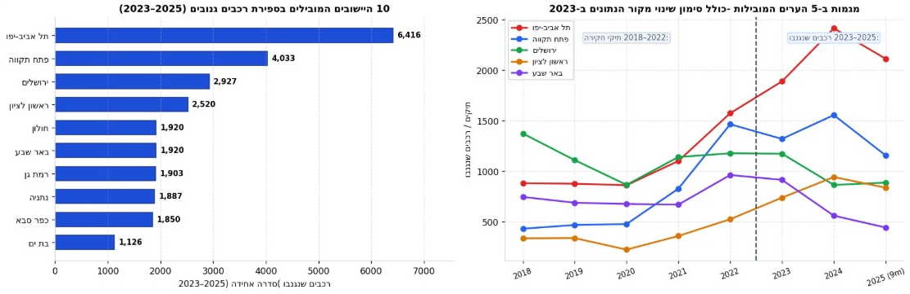
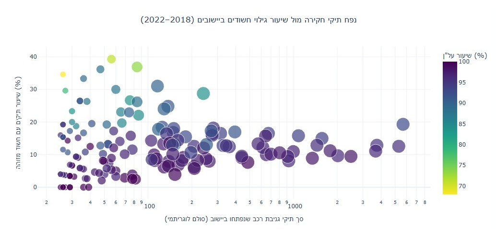

בישראל נגנבים מדי שנה כ-20,000 כלי רכב, ומעל 94% מהתיקים נסגרים ללא פענוח ("עבריין לא נודע").
הפרויקט מצליב את נתוני משטרת ישראל עם מצבת הרכבים של הלמ״ס (2017–2025), ובונה מודל החוזה את היקף הגניבות
הצפוי בשנה הבאה לפי דגם, שנתון ויישוב. לצד המודל פותחה שכבת מוצר נפרדת הכוללת מדד סיכון יחסי וסוכן AI
להשוואת חלופות רכב, מיגון וביטוח.
ענף ביטוחי הרכב בישראל מתמודד עם ריכוזיות גניבות חריפה בדגמים מבוקשים לפירוק חלפים לצד שיעורי פענוח נמוכים.
כדי להימנע מעירוב מתודולוגי בין חיזוי סטטיסטי אמפירי לבין ממשק מוצרי להערכת
סיכון,
המערכת מפרידה באופן קשיח בין שכבת למידת המכונה (המאומנת ונבחנת על ספירות אמת תחת חיתוך זמן עיוור) לבין שכבת
התמיכה בהחלטות בדשבורד, המציגה אינדקס סיכון יחסי אחיד וסימולציית המלצות מיגון.
מנוע 1 · ML Track 1 (Count + Offset)
XGBoost Poisson
מה הוא חוזה: תוחלת מספר הגניבות $(\hat{\mu}_{i,T})$ לכל צירוף
יצרן-דגם-שנתון-עיר, מכוילת ל-9 חודשי 2025 (Offset log(0.75)). תוצאה מובילה:RMSE = 1.2898, R² = +0.1984, צמצום שגיאת הזנב
ב-41.1% מול החציון וריכוז 58.18% מהגניבות בעשירון 10. תפקיד: מודל הספירה המחקרי הראשי לדירוג מוקדים.
מנוע 2 · ML Track 2 (Continuous)
Random Forest (0–100)
מה הוא חוזה: ציון עצימות רציף מכויל לוגריתמית (0–100) ביחס לתקרת האימון של 2024 בלבד
(TRAIN_MAX_LOG = 4.25). תוצאה מובילה: מקדם קביעה $R^2 = +0.3157$ ו-MAE = 5.60 נק׳ ללא
זליגת סקאלה משנת המבחן. תפקיד: אימות יציבות עצי ההחלטה בסקאלה לוגריתמית ממותנת-אפסים.
מנוע 3 · Product Decision Prototype
אינדקס מוצרי (50/45/5)
מה הוא מחשב: מדד סיכון יחסי שקוף לממשק המשתמש מנתוני טרום-2025:
0.50×Model + 0.45×City + 0.05×Macro(50) (ללא צירי מילוט). תוצאה מובילה: כיסוי מלא ב-$O(1)$ גם לדגמים ויישובים דלילים (Cold-Start). תפקיד: תצוגת מד הסיכון בדשבורד ומנוע המלצות מיגון להדגמה מוצרית.
דיאגרמת ארכיטקטורת שתי השכבות והתהליך (Interactive Pan & Zoom)
100%

איור 1.1 — ארכיטקטורת שתי השכבות: זרימת הנתונים מקובצי המקור המקומיים (משטרת ישראל והלמ״ס,
2017–2025)
דרך מכונת המצבים וההסגר אל פאנל החיזוי הדו-מסלולי (XGBoost Poisson ו-Random Forest)
ואל שכבת ההדגמה המוצרית (50/45/5) בדשבורד. ניתן לגלול לזום ולגרור להזזה.
פירוט 4 שאלות המחקר והמענה המתודולוגי המבוקר לכל אחת
שאלת מחקר
האתגר ההנדסי והמתודולוגי
המתודולוגיה במחברת CarTheftRisk_final
הממצא המאומת
Q1: דגם מול גיאוגרפיה
מה תרומת היסטוריית הדגם-עיר מול נפח הגניבות העירוני ומדדי האכיפה?
ניתוח SHAP TreeExplainer על מודל הספירה הנקי מזליגה + ולידציה מרחבית
GroupKFold לפי עיר.
lag_1_thefts ו-city_lag_1_thefts מובילים את כוח הניבוי; בשכבת ה-UI מוגדר
אינדקס שקוף (50/45/5).
Q2: נירמול חשיפה (למ״ס)
איך מבחינים בין נפח גניבות גבוה הנובע מתפוצת הרכב לבין סיכון יחסי חריג?
הפרדה דו-שכבתית בנספח D: שיעורים נצפים ישירים (מותגי EV וארץ ייצור) מול אינדקס פרוקסי דטרמיניסטי
לדגם.
פער חד בתוך שוק ה-EV (אורה 27.47‰ מול טסלה 0.16‰); במדד הפרוקסי קורולה 37.00‰ מול ממוצע פרטי נצפה
3.51‰.
Q3: ספירות דלילות ופערי תקופה
איך חוזים ספירות כש-83.8% מתאי המבחן הם אפס ושנת 2025 כוללת 9 חודשים בלבד?
קובצי הגניבות של משטרת ישראל מגיעים כדוחות היררכיים מקוננים עם שורות סיכום, ערכים חסרים ותקופת דיווח חלקית בשנת
2025 (9 חודשים בלבד).
פרק זה מציג בשלושה צעדים ברורים כיצד זוקקו הקבצים המקומיים (data/raw/) לפאנל אימון ומבחן אמין, ללא
המצאת נתונים סינתטיים וללא הצצה לנתוני העתיד.
2.1
משפך זיקוק הנתונים (4 שלבים מרמת הקובץ ועד פאנל המודל)
במקביל לציר רב-שנתי של 105,711 גניבות ב-1,271 דגמים (2017–2025)
שלב 01 · קובץ העץ הגולמי
39,328
שורות בדוח המשטרה (2023–2025)
מבנה עץ בן 5 רמות (סוג רכב ← שנתון ← יצרן ← דגם ← יישוב), מול שורת סיכום עליונה של 53,992
גניבות.
שלב 02 · חילוץ רשומות עלה
26,802
שורות עלה נקיות (54,007 גניבות)
אלגוריתם State-Machine המאפס רמות בן בכל החלפת אב וחוסם זליגת שמות על פני 2,439
בלוקים חסרים ('-').
שלב 03 · הסגר ואיחוד מפתחות
23,831
צירופים מוניציפליים מזוהים
מפתחות ייחודיים של (יצרן, דגם, שנתון, עיר) המכסים 48,717 גניבות, לאחר העברת
2,444 שורות חסרות להסגר.
שלב 04 · פאנל החיזוי הנקי
17,389 → 16,853
אימון (2024) ומבחן עיוור (2025)
צירופים שהיו מוכרים בשנה הקודמת בלבד (ללא צירופים שנולדו בשנת היעד), על פני 1,205 רשויות
מאוחדות.
כלל ניקוי 1 · State-Machine
איפוס ענפים קשיח
בכל מעבר ליצרן או שנתון חדש בעץ המשטרה מתאפסים מיד כל ערכי הבן, כך שדגם משורה קודמת לעולם אינו "גולש" לשורות
סיכום או לבלוקים ריקים.
כלל ניקוי 2 · Quarantine
הסגר במקום המצאת נתונים
2,444 שורות עלה ללא שנת ייצור או ללא יישוב מזוהה (5,290 גניבות) נשמרות בטבלת הסגר
נפרדת במקום להשלים עבורן שנתון מלאכותי.
כלל ניקוי 3 · Series Break
הפרדת שבר הסדרה ב-2023
בקבצים העירוניים מופרדים במפורש תיקי חקירה שנפתחו (2018–2022) מכלי רכב
שנגנבו (2023–2025), ללא סכימה מבלבלת ביניהם.
2.2
מבנה הנתונים הסטטיסטי וכיול 9 חודשי 2025
למה בחרנו במודל Poisson ואיך השווינו שנה מלאה לשנה חלקית
אבחון התפלגות הספירות בפאנל האימון (2024)
n = 17,389
רוב שילובי הדגם והעיר אינם חווים גניבה בשנה נתונה, בעוד מספר קטן של מוקדים עירוניים מרכז עשרות ומאות גניבות:
82.7%
תאים עם 0 גניבות
82.7% באימון (2024) ו-83.8% במבחן (2025)
9.3%
גניבה בודדת (Y = 1)
אירועים נקודתיים פזורים ברשויות
0.84%
מוקדים כבדים (Y ≥ 10)
146 צירופים המרכזים את עיקר הנזק
7.87x
פיזור-יתר (Overdispersion)
שונות 3.79 מול תוחלת 0.48
משמעות למודל: רגרסיה רגילה (MSE) עלולה לנבא ערכים שליליים ונמשכת לחריגים. לכן
נבחרה פונקציית מטרה פואסונית (count:poisson) המבטיחה תחזיות אי-שליליות ודירוג יציב בזנב.
כיול אורך התקופה: 12 חודשים מול 9 חודשים
Exposure Offset
שנת האימון 2024 כוללת שנה מלאה (12 חודשים), בעוד נתוני 2025 מסתיימים בספטמבר וכוללים
9 חודשים בלבד (75% משנה). כדי לבחון את המודל בצורה הוגנת מבלי לגעת בנתוני המבחן, הקצב השנתי
החזוי מוכפל ב-0.75:
הציונים model_risk_score, city_risk_score ו-composite_theft_score הם
תוצרי שכבת ההדגמה המוצרית בלבד ונחסמים בבדיקת assert col not in FEATURES למניעת זליגה מעגלית.
פירוט 5 קובצי המקור הרשמיים בתיקיית data/raw וחתימות ה-SHA-256 שלהם
חישוב שיעורים אמפיריים נצפים (מותגי EV וארץ ייצור) ואינדקס חשיפה פרוקסי דטרמיניסטי לדגם בנספח D.
פרק 03
פירוק אשליית הנפח: מצבת הרכב (למ״ס 2025) ודפוסי השטח
CBS 2025 Fleet Exposure & Municipal Crime Patterns
מספר הגניבות הגולמי מושפע ישירות מתפוצת הרכב על הכביש ולא רק מרמת הסיכון שלו.
כדי למדוד סיכון יחסי אמיתי (לכל 1,000 רכבים פעילים), הצלבנו את נתוני המשטרה עם מצבת
הרכב של הלמ״ס לסוף 2025 (4,348,275 מנועיים, מתוכם 3,789,429 פרטיים) לפי
מותגי רכב חשמלי ונתחי שוק של יצרנים, המהווים בסיס להשוואה בהעדר מפקד פתוח ברמת דגם ויישוב.
3.1
תמונת המאקרו הארצית (מצבת הרכב מול היקף הגניבות ב-2025)
למ״ס סוף 2025 · הודעה 102/2026
4,348,275
כלל כלי הרכב המנועיים (4.68‰)
שיעור ארצי של 4.68 גניבות ל-1,000 רכבים (על בסיס קצב שנתי של 20,344 גניבות)
3,789,429
רכבים פרטיים פעילים (3.51‰)
שיעור נצפה של 3.51 ל-1,000 רכבים פרטיים (9,974 גניבות ב-9 חודשים / 13,299 שנתי)
שיעור הגניבה ל-1,000 רכבים: נתוני אמת ישירים מול אומדן ברמת דגם
נספח D · תאים 55–57 במחברת
עבור כלל הצי, ארצות הייצור ומותגי הרכב החשמלי חושב שיעור גניבה ישיר מנתוני
הלמ״ס, מאחר שמספר הרכבים הפעילים על הכביש ידוע במדויק.
עבור דגמים ספציפיים, שבהם הלמ״ס מפרסמת את נתח היצרן בלבד ללא חלוקה פנימית בין הדגמים שלו,
פיתחנו אומדן מצבה מחושב לדגם בשלושה צעדים:
צעד 1 · חלוקה פנימיתחלוקת מצבת היצרן בין הדגמים שלו
כל דגם מקבל רצפת בסיס של 30% בתוספת 70% לפי משקלו היחסי אצל אותו יצרן
(0.3 + 0.7 × משקל פנימי), כדי שגם דגמים שנגנבים מעט לא יקבלו מצבה אפסית.
צעד 2 · כיול ארציהתאמה למצבה הרשמית של הלמ״ס
המשקולות מתורגמות למספר רכבים פעילים כך שסך כל הדגמים מסתכם בדיוק ב-3,789,429 הרכבים הפרטיים
בישראל.
צעד 3 · יציבות סטטיסטיתסינון דגמי קצה נדירים
הדירוג כולל רק דגמים נפוצים (לפחות 3,000 רכבים פעילים ולפחות 20 גניבות בשנה),
כדי למנוע מדגמים נדירים לעוות את ראש הטבלה בגלל מכנה קטן.
מסלול 1 (ישיר): מותגי רכב חשמלי מלא
מצבה מדויקת מקובץ הלמ״ס (רכב חשמלי לפי יצרן 2025)
בחינת המצבה הרשמית מפריכה את ההנחה שכל רכב חשמלי חסין גניבה, וחושפת פער חד בין המותגים:
אורה (ORA)
27.47 ‰
ג׳ילי (GEELY)
19.51 ‰
סרס (SERES)
17.87 ‰
ממוצע רכב פרטי ארצי
3.51 ‰
בי-ווי-די (BYD)
1.53 ‰
אקספנג (XPENG)
0.26 ‰
טסלה (TESLA)
0.16 ‰
זיקר (ZEEKR)
0.00 ‰
תובנה מרכזית: מותגים עם נעילת תוכנה ומעקב רציף (כגון טסלה, אקספנג ו-BYD לאחר עדכון האבטחה
ב-2025) כמעט אינם נגנבים, בעוד ג׳ילי, אורה וסרס מציגים חשיפה גבוהה פי 5 עד 8 מהממוצע הארצי.
מסלול 2 (אומדן דגם): הדגמים החשופים ביותר
אומדן מצבה דטרמיניסטי · תא 57
דירוג יחסי ל-1,000 רכבים משוערים בקרב דגמים פרטיים נפוצים (לפחות 3,000 רכבים ו-20 גניבות בשנה):
טויוטה COROLLA
37.00 ‰
טויוטה YARIS
36.80 ‰
יונדאי ELANTRA
22.17 ‰
טויוטה LAND CRUISER
20.77 ‰
קיה SELTOS
19.39 ‰
יונדאי IONIQ
15.67 ‰
קיה NIRO
15.39 ‰
מאזדה MAZDA 3
13.33 ‰
תובנה והסתייגות: דגמים יפניים וקוריאניים מבוקשים לחלפים מובילים את המדד היחסי. מאחר שהמכנה
נאמד מנתח היצרן בלמ״ס, יש לקרוא ערכים אלו כמדד דירוג השוואתי ולא כנתון רישוי רשמי.
לצפייה בטבלאות המלאות: פילוח סוגי הרכב, 7 מותגי ה-EV וכל 15 הדגמים המובילים
מסלול 1: שיעור גניבות ישיר למותגי רכב חשמלי
מלא (מתוך נתוני הלמ״ס: התפלגות רכבים חשמליים לפי יצרן 2025)
מותג חשמלי מלא
מצבה פעילה רשמית (סוף 2025)
גניבות 2024
גניבות 2025 (9 חודשים)
קצב שנתי 2025
שיעור שנתי נצפה ל-1,000
אורה (ORA)
2,719
22
56
74.7
27.47‰
ג׳ילי (GEELY)
20,774
607
304
405.3
19.51‰
סרס (SERES)
4,924
24
66
88.0
17.87‰
בי-ווי-די (BYD)
41,759
544
48
64.0
1.53‰ (צניחה חדה לאחר עדכון אבטחה)
אקספנג (XPENG)
10,584
0
2
2.7
0.26‰
טסלה (TESLA)
32,420
6
4
5.3
0.16‰
זיקר (ZEEKR)
4,596
0
0
0.0
0.00‰
מסלול 2: טבלת 15 הדגמים הפרטיים המובילים לפי
אומדן המצבה הדטרמיניסטי
#
יצרן ודגם
גניבות 2025 (9m)
קצב שנתי (Run-Rate)
אומדן מצבה פעילה
מדד יחסי ל-1,000
1
טויוטה קורולה (COROLLA)
1,380
1,840
49,727
37.00‰
2
טויוטה יאריס (YARIS)
477
636
17,282
36.80‰
3
יונדאי אלנטרה (ELANTRA)
361
481
21,695
22.17‰
4
טויוטה לנד קרוזר (LAND CRUISER)
311
415
19,982
20.77‰
5
קיה סלטוס (SELTOS)
167
223
11,500
19.39‰
6
יונדאי איוניק (IONIQ)
431
575
36,701
15.67‰
7
קיה נירו (NIRO)
270
360
23,396
15.39‰
8
מאזדה 3 (MAZDA 3)
268
357
26,776
13.33‰
9
קיה סורנטו (SORENTO)
151
201
15,587
12.90‰
10
קיה ספורטאז׳ (SPORTAGE)
216
288
23,623
12.19‰
11
מיצובישי אאוטלנדר (OUTLANDER)
164
219
19,126
11.45‰
12
יונדאי i20
161
215
19,226
11.18‰
13
קיה סטוניק (STONIC)
127
169
15,732
10.74‰
14
יונדאי איוניק היבריד (IONIQ HYBRID)
144
192
18,466
10.40‰
15
יונדאי סונטה (SONATA)
149
199
19,166
10.38‰
3.3
דפוסי הפשיעה המרחביים ב-1,205 הרשויות בישראל
סיווג רשויות היסטורי (2018–2022) ומוקדי צירי הרוחב
גניבות רכב בישראל הן תופעה מרחבית מובהקת המושפעת מצירי תנועה מהירים, קרבה לקו התפר, ורמת השיטור העירונית. פרק זה
מפרט כיצד אלגוריתמי אשכול בלתי מונחים (Unsupervised Clustering בנספח B, תאים 51–52) חילצו את דפוסי הסיכון על פני
1,206 רשויות ויישובים (על בסיס מאגר האכיפה של 2018–2023), וכיצד תובנות אלו מזינות את רכיב הסיכון העירוני (45%)
בנוסחת התמחור של הממשק.
סיווג אוטומטי · K-Means (K=4)
4 פרופילים מוניציפליים לפי היקף תיקים ואכיפה
337 מוקדים עירוניים ראשיים: ממוצע של 161.8 תיקי חקירה היסטוריים לרשות,
גילוי נמוך (11.2%) ו-95.4% סגירה ללא פענוח (ת״א-יפו, פתח תקווה, ראשון לציון,
ירושלים, באר שבע ונתניה).
160 רשויות ביניים: היקף מתון (6.4 תיקים בממוצע) ושיעור גילוי גבוה יחסית
(50.6%).
708 יישובים שקטים וכפריים:680 יישובים בפעילות נמוכה ו-28
יישובים כפריים שקטים (מדד הפרדה Silhouette = 0.469, ו-2 ערי קצה חריגות
ב-DBSCAN).
השוואה גיאוגרפית · 9 ערי ציר
מוקדי צירי הרוחב המהירים וקו התפר
קבוצת הייחוס: 9 ערים מרכזיות היושבות לאורך כביש 6, כביש 1 וכביש 443 (ירושלים, פתח
תקווה, כפר סבא, ראש העין, מודיעין, רמלה, לוד, טייבה וקלנסווה).
פער חד בשנת 2024: חציון של 561 גניבות ב-9 ערי הציר
(ו-96.3% סגירת על״ן) לעומת חציון של 5.5 גניבות בלבד ביתר 280 היישובים
הפעילים.
הפרדה מהמודל: תיוג זה משמש לניתוח גיאוגרפי תיאורי בלבד ואינו מוזן כמשקולת ידנית למודלי
ה-ML.
איור 3.2: התפלגות ציוני הסיכון העירוניים (15–100) על פני הרשויות בישראל: חציון
33.0, ממוצע 35.6 וזנב ימני של ערי המוקד.
פרק 04
ניתוח נתונים חקרני
Exploratory Data Analysis (EDA) & Research Visualizations
מחברת המחקר CarTheftRisk_final כוללת מערך של 8 תרשימים חקרניים מרכזיים (EDA) הממפים את עקומת הפארטו
של הדגמים, מגמות רב-שנתיות, שנתוני ייצור, מוקדי ערים ודפוסי אכיפה היסטוריים.
גלריה אינטראקטיבית זו מאפשרת סינון נושאי של התרשימים ולחיצה על כל תרשים לצפייה מוגדלת ברזולוציה מלאה:
סינון לפי
נושא:
איור 4.1 (נספח D): השוואת שיעור הגניבות הישיר במותגי רכב חשמלי מלא (מימין) מול
אומדן החשיפה ל-15 הדגמים הפרטיים המובילים (משמאל).
איור 4.3 (סעיף 4.1): מגמות גניבות ארציות בשנים 2017–2025: קפיצת מדרגה מ-2021 לשיא
של 19,990 ב-2023 ו-15,258 ב-9 חודשי 2025 (קצב שנתי 20,344).
איור 4.4 (סעיף 4.2): עקומת פארטו על פני 946 דגמים מזוהים: 10 דגמים מרכזים 42.3%
מהגניבות ו-50 דגמים מרכזים 76.3%.

איור 4.5 (סעיף 13.1): התפלגות הגניבות לפי שנת ייצור בפאנל 2023–2025 (שיא של 6,053
בשנתון 2021; שנתוני 2024–2025 שהו זמן קצר יותר על הכביש).

איור 4.6 (סעיף 4.3): מפת חום רב-שנתית (2017–2025) של 15 הדגמים המובילים: הובלה
עקבית של קורולה (10,573 מצטבר) וזינוק חד בדגמים היברידיים.

איור 4.7 (סעיף 4.4): 5 הערים המובילות עם סימון מפורש של שבר הסדרה ב-2023 (ב-2024
מובילות תל אביב-יפו עם 2,414 ופתח תקווה עם 1,556 רכבים).

איור 4.8 (סעיף 4.5): סדרת האכיפה ההיסטורית (2018–2022, $n=160$ יישובים עם $\ge
25$ תיקים, $\rho = 0.178$): התכנסות שיעור הגילוי בערים הגדולות סביב ~13% ומעל 94% סגירה בעל״ן.
פרק 05
התלבטויות הנדסיות
Engineering Dilemmas & Methodological Trade-offs
מעבר מקובצי משטרה גולמיים למערכת חיזוי מבוקרת מחייב הכרעות הנדסיות שבהן לכל בחירה יש מחיר מתמטי או תפעולי.
להלן 5 צומתי ההחלטה המרכזיים שעוצבו במחברת CarTheftRisk_final:
צומת 01 · בחירת אוכלוסייה נקייה מזליגה מול כיסוי ממשקהפרדה בין נתוני החיזוי לנתוני הדשבורד
חיזוי אמין מתחיל בהפרדה נכונה של הנתונים בדשבורד
הדילמה:
, בניית פאנל המבחן לשנת 2025 מכלל הצירופים שהופיעו בין 2023 ל-2025 יוצרת זליגת מידע (Data
Leakage), משום שהיא מכניסה למבחן בדיעבד רכבים שנגנבו לראשונה ב-2025.
שימוש בקוהורט (קבוצת מחקר) טרום-חיתוך בלבד מותיר "שטחים מתים" ואינו מכסה דגמים נדירים ביישובים
קטנים
שמוצגים בדשבורד.
המחיר והסיכון:
הקפדה על בניית קוהורט סימטרית ממידע עד $T-1$ בלבד (17,389 באימון ו-16,853
במבחן) מעלה את שיעור האפסים ל-83.8% ודורשת מנגנון נפרד עבור שאילתות Cold-Start בממשק.
✓ ההכרעה והתוצאה ההנדסית
הפרדה כפולה: פאנל ה-ML נבנה בקשיחות ממידע טרום-חיתוך בלבד (פעילים ב-$T-1$ + רשת 120×80
מ-$T-1$), ולצידו שכבת UI היוריסטית שקופה (50/45/5 על נתוני טרום-2025) המספקת מענה ב-$O(1)$
לכל 1,271 הדגמים ו-1,205 הרשויות.
ניחוש האפס הנאיבי מול דיוק מכויל-חשיפה במוקדי הפשיעה
הדילמה:
כאשר 83.8% מתאי המבחן הם אפס, ניחוש קבוע של 0 משיג אוטומטית את
ה-MAE הגלובלי הנמוך ביותר (0.3802 מול 0.4776 ב-XGBoost). הסתמכות
על MAE כללי לבדו תכתיר מודל עיוור לחלוטין למוקדים.
המחיר והסיכון:
ויתור מודע על כ-0.10 נקודות ב-MAE של תאי האפס כדי לדייק במוקדים הכבדים (Y ≥ 10) ולכייל את
פערי 9 החודשים של 2025.
✓ ההכרעה והתוצאה ההנדסית
אימון פואסוני עם Exposure Offset = log(0.75) וכוונון max_depth=3
ב-GroupKFold מרחבי: צמצום שגיאת הזנב ב-41.1% מול החציון (מ-14.73 ל-8.67),
שיפור של 33.0% ב-MAE מול התמדה מכוילת, ו-R² = +0.1984.
צומת 03 · עצי החלטה מול Deep LearningTail 8.67 מול 10.17 ב-MLP
XGBoost Poisson מול רשת עצבית מבוקרת (CountMLP + Early Stopping)
הדילמה:
בנספח A אומנה רשת PyTorch CountMLP עם ולידציה מרחבית אמיתית ועצירה מוקדמת (Epoch 20),
שהשיגה כיווץ חלק ו-RMSE גלובלי נמוך יותר (1.2036, R² = +0.3019).
המחיר והסיכון:
הכיווץ החלק של הרשת העצבית שמרני מדי במוקדי הקצה הקיצוניים (Tail MAE = 10.17 לעומת
8.67 ב-XGBoost) ומקשה על הפקת הסברי SHAP מדויקים לחיתום.
✓ ההכרעה והתוצאה ההנדסית
בחירה ב-XGBoost Poisson כמודל הראשי בזכות חדות עדיפה במוקדי הקצה (8.67),
הסבריות מובנית ב-TreeExplainer ואפס תלות ב-PyTorch בזמן ריצה.
צומת 04 · הסגר נתונים חסריםZero Fake Imputation
הסגר מתועד (Quarantine) מול השלמת שנתונים סינתטית
הדילמה:
בקובץ המשטרה קיימות 2,444 שורות עלה (5,290 גניבות) ללא שנתון ייצור או עם שיוך
מחוזי כללי במקום עיר, וכן העדר פירוט עירוני בשנים 2017–2022. האם להשלים להן
model_year = 2020 ולייצר פאנל סינתטי?
העברת 2,444 השורות החלקיות לטבלת הסגר מתועדת (df_quarantine_leaves) ושימור
פאנל מוניציפלי טהור (23,831 מפתחות) עם 0 נתונים מומצאים.
צומת 05 · שיעור נצפה מול פרוקסי בלמ״סTwo-Tier Exposure
מכנה למ״ס ישיר למותגי EV מול אומדן דטרמיניסטי לתת-דגם
הדילמה:
הלמ״ס מפרסם מצבה מדויקת ליצרנים ולמותגי רכב חשמלי (תרשים 10), אך לא מפקד פתוח ברמת תת-דגם
בנזין/היברידי. האם לוותר כליל על השוואת דגמים או להציג אומדן כנתון רשמי?
בחירת עומק העץ (max_depth = 3) בוצעה בוולידציה צולבת מרחבית (5-Fold GroupKFold לפי
רשות מקומית על אימון 2024 בלבד: CV R² = +0.3343).
לאחר מכן נבחנו כלל המודלים פעם אחת ויחידה במבחן עיוור על שנת 2025 (n = 16,853 תצפיות,
6,408 גניבות ב-9 חודשים) תחת התאמת חשיפה Exposure = 0.75,
עם רווחי סמך בדגימת אשכולות עיר (City-Clustered Bootstrap, B=500).
ρ = 0.4089
מתאם דירוג ספירמן
95% Cluster CI: [0.3386, 0.4561]
-41.1%
צמצום שגיאת זנב (Y ≥ 10)
ירידה מ-14.73 בחציון ל-8.67 ב-XGBoost Poisson
+0.1984
מקדם קביעה $R^2$ בספירות
RMSE = 1.2898 | שיפור 33.0% ב-MAE מול התמדה
R² = +0.3157
אלוף המסלול הרציף (0–100)
Random Forest בתקרת אימון בלבד (MAE = 5.60)
השוואת מודלים דו-מסלולית במבחן עיוור על שנת 2025 (מותאם חשיפה 0.75)CarTheftRisk_final · Sections 10–11 & Appendix A
פירוק רכיבים (טרום-2025): ציון דגם היסטורי = 100/100 (משקל 50% ← 50.0 נק׳)
· ציון עיר היסטורי =
100/100 (משקל 45% ← 45.0 נק׳) · בסיס מאקרו קבוע = 50/100 (משקל 5% ← 2.5 נק׳).
ב-2024 נרשמו לצמד זה 163 גניבות בתל אביב-יפו (ותחזית המודל ל-9 חודשי 2025:
83.6 מול 117 בפועל).
🛡️ פלט מנוע המלצות המיגון (להדגמה):
1. איתור פעיל דו-ערוצי + עלוקה אלחוטית. 2. חסימת שקע OBD פיזית מפני שכפול מפתח. 3. חניה סגורה/מוארת או
מנעול הגה מכני.
❄️ מנגנון ה-Cold-Start לשאילתות חדשות:
במצב שבו מבוקש דגם חדש (ללא היסטוריית גניבות קודמת) או יישוב קטן שאינו מופיע במילוני ה-Lookup, המערכת אינה
מאפסת את הסיכון ל-0 ואינה מחזירה שגיאת KeyError.
במחברת הוגדר עוגן סיכון בסיסי דטרמיניסטי (default = 30–35 נקודות), ובממשק ה-Live Web המנגנון
שוכלל לנסיגה היררכית מרובעת:
דגם×עיר ← ממוצע דגם ארצי ← ממוצע יצרן ← עוגן ארצי (32.4), בלוויית תגית שקיפות
מפורשת למשתמש.
ממשק ה-Decision Support בפרוטוטייפ החי (Live Interface)Live Dashboard · index.html
אפליקציית ה-Web האינטראקטיבית מדגימה שליפת פרופיל סיכון ב-$O(1)$, שקיפות בחלון פירוק הציון, השוואת חלופות רכב
מאותה קטגוריה ואנליטיקת מגמות מקומית:
מעל שכבת הנתונים פותח סוכן מבוסס ReAct המפעיל 4 כלי Python דטרמיניסטיים לחישוב סיכון, סימולציית
הצעות מחיר מחקריות, השוואת חלופות והערכת הנחת מיגון — כך שכל חישוב כספי מתבצע בקוד מבוקר ללא הזיות LLM:
שמירה על יושרה מדעית מחייבת תיעוד גלוי של גבולות הגזרה של הנתונים והמודלים, לצד מסקנות יישומיות המבוססות ישירות
על הממצאים האמפיריים:
4 מגבלות מתודולוגיות מפורשות
1. העדר מפקד חשיפה דגם × עיר ורזולוציה היסטורית: מצבת הלמ״ס מתפרסמת ברמה
ארצית (לכן שיעורי הדגמים ברובד D.2 הם אינדקס פרוקסי דטרמיניסטי), ונתוני 2017–2022 לדגמים הם ארציים בלבד —
ולכן לא ניתן לבצע Rolling-Origin Backtest רב-שנתי ברמת דגם-עיר לפני 2023.
2. דלילות אפסים בקוהורט טרום-חיתוך:83.8% מתאי המבחן הם אפסים. כוחו של
מודל ה-XGBoost Poisson הוא בדירוג הקבוצתי היחסי ($\rho = 0.4089$,
D10 = 58.18%) ובצמצום שגיאת הזנב ב-41.1%, ולא בחיזוי אירוע לרכב בודד.
3. שבר הסדרה ב-2023 וחשיפת 9 חודשים ב-2025: נתוני הערים ב-2018–2022 סופרים תיקי חקירה
בעוד 2023–2025 סופרים כלי רכב גנובים; שנת 2025 מכסה 9 חודשים וכווילה במודל באמצעות
Exposure Offset = 0.75.
4. הפרדת פרוטוטייפ מתעריף מסחרי: אינדקס ה-UI (50/45/5) וסימולציית מחירי
הסוכן הם כלי הדגמה מחקריים ואינם הצעות ביטוח חיות.
המלצות אופרטיביות מבוססות-ממצאים
לחתמים ואנליסטים בענף הביטוח: שימוש בדירוג העשירונים המונוטוני (עשירונים 9–10 לוכדים
72.32% מהגניבות, ועשירון 10 לבדו 58.18%) למיקוד דרישות מיגון ב-50 הדגמים
המובילים (76.3% מהנפח), תוך הבחנה חדה בין מותגי EV בסיכון גבוה (אורה 27.47‰, ג׳ילי 19.51‰)
לנמוך (בי-ווי-די 1.53‰, טסלה 0.16‰).
למערכי אכיפה ושיטור: תגבור אמצעי תצפית וחסימה ברשויות אשכול העצימות הגבוהה ובערים
המרכזיות על צירי הרוחב (חציון 561 גניבות בשנה לעומת 5.5 בשאר היישובים).
להמשך מחקר ופיתוח: חיבור טבלת רישוי רשמית של משרד התחבורה ברזולוציית
יצרן × דגם × שנתון × יישוב להחלפת אינדקס הפרוקסי במכנה חשיפה מדויק בתוך פונקציית ההפסד
הפואסונית.